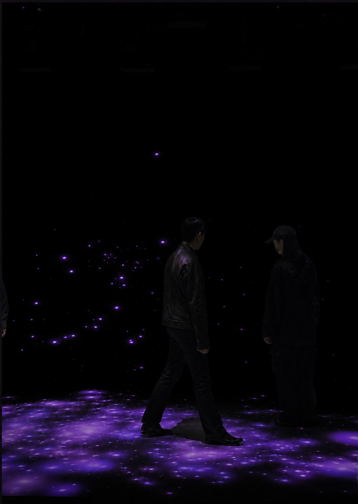
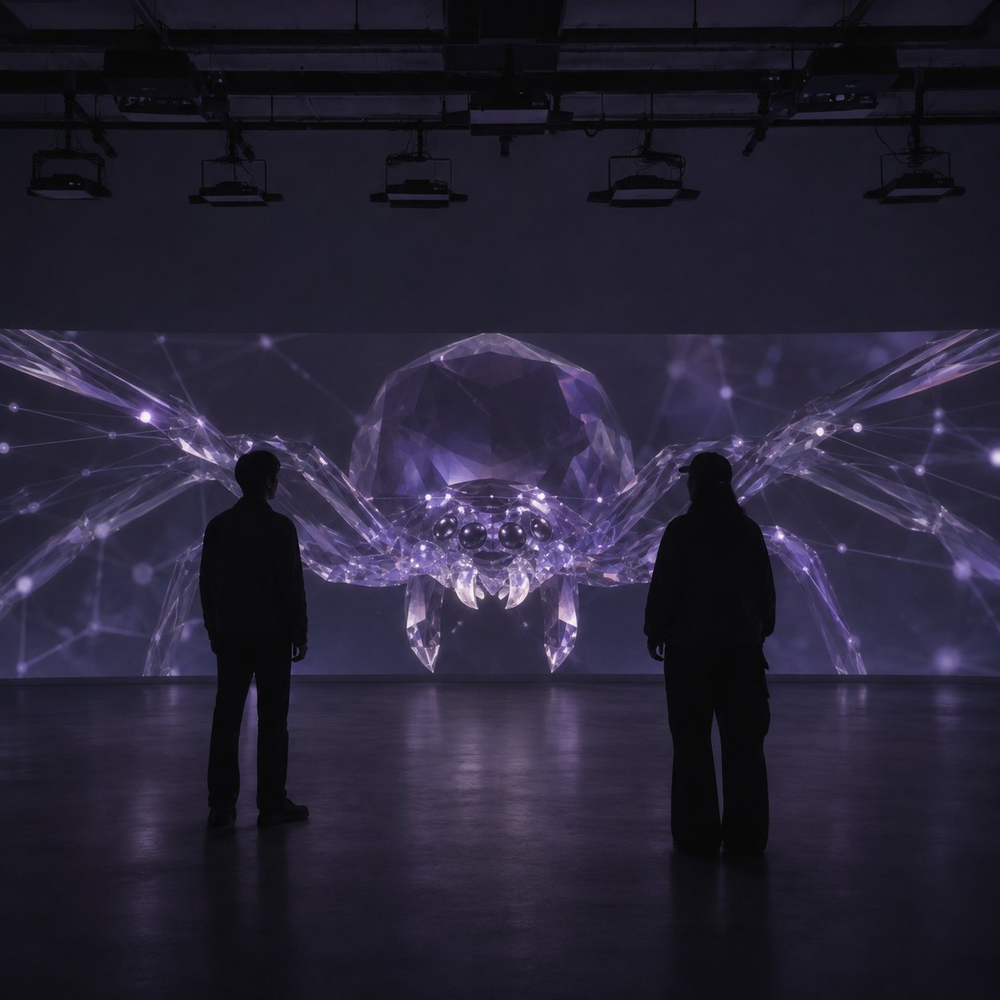
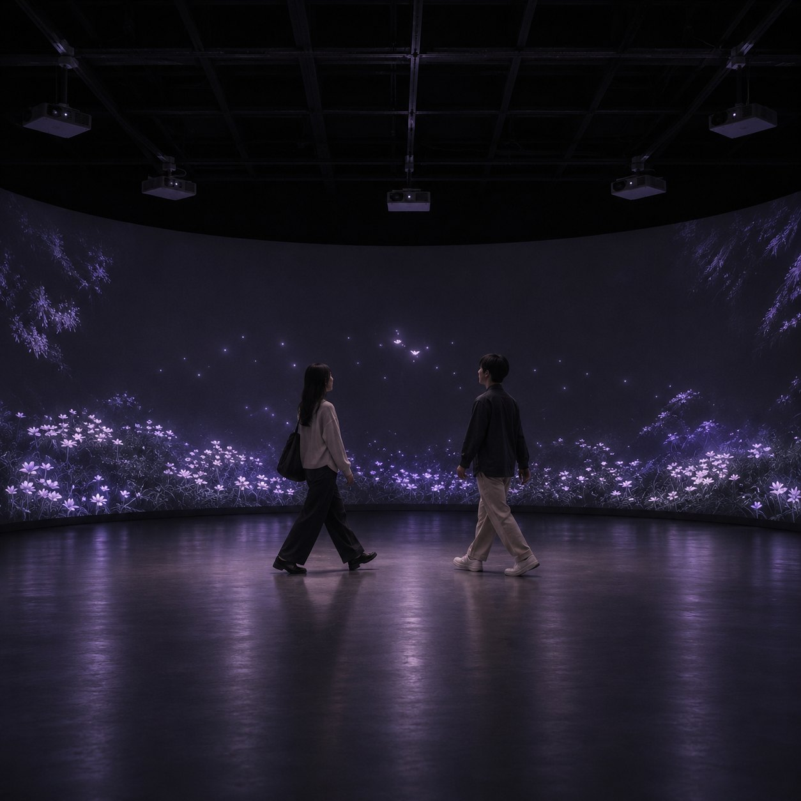
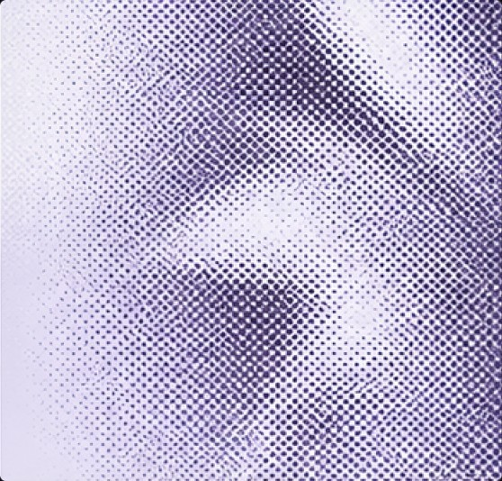
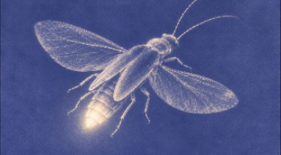
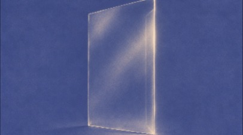
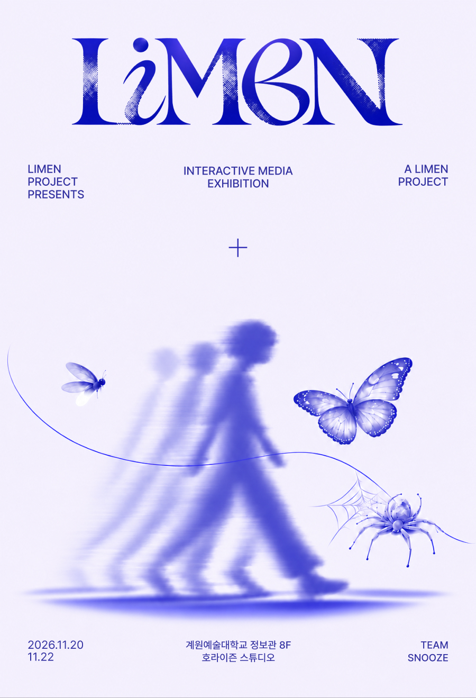
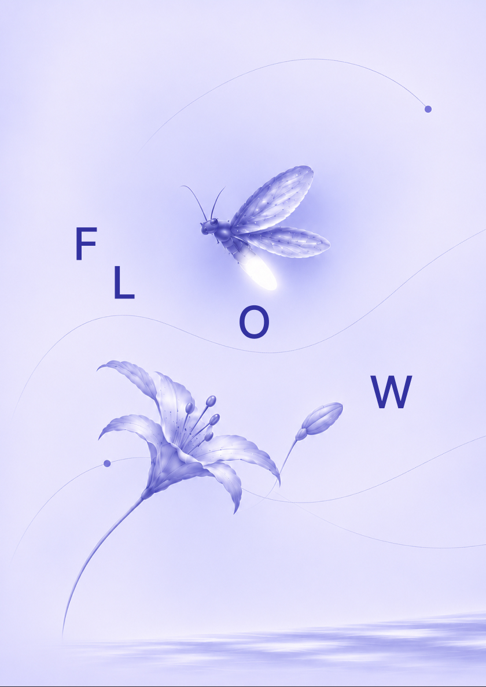

AFTER THE EXPERIENCE
A DIFFERENT WAY TO SEE
Awake.
감각의 전환,
다시 깨어나는 인식.
LIMEN / A MOMENT AFTER THE FLOW
SCROLL TO RETRACE ↓RETRACE / 반딧불이부터 엔딩까지
당신이 지나온 다섯 장면.
기억에 남은 장면을 선택하고,
그 순간의 감각을 다시 만나보세요.





01 / FIREFLY
02 / MOTH
03 / SPIDER
04 / CROWD
05 / ENDING
작은 신호를 마주하다
이끌림의 방향을 따라가다
연결된 관계를 인식하다
서로의 흐름을 마주하다
나의 선택을 다시 바라보다
BEHIND THE SCENES / 장면에 담긴 의미
다섯 장면, 다섯 개의 질문.
FLOW → AWARENESS → CHOICE
경험을 지나, 의미를 발견하다.
FLOW
흐름을 마주하다
나를 둘러싼 신호와 움직임을 바라봅니다.
AWARENESS
영향을 알아차리다
선택에 스며든 외부의 영향을 인식합니다.
CHOICE
나의 선택을 바라보다
알아차림을 바탕으로 나만의 방향을 질문합니다.
어둠 위에
빛을 쌓다.
짙은 바탕에서 시작해 보랏빛의
층을 더합니다. 밝은 라벤더는
반응하는 순간과 중요한
메시지를 드러냅니다.
스와치를 누르면
HEX 코드를 복사할 수 있습니다.
TYPEFACE
Cormorant Garamond
WEIGHTS
Light / Regular
STYLE
Roman / Italic
ABCDEFGHIJKLMNOPQRSTUVWXYZ
abcdefghijklmnopqrstuvwxyz
0123456789 & ! ?
AaBb
KOREAN
Noto Sans KR
LATIN
Inter
WEIGHTS
Light / Regular / Medium
가나다라마바사아자차카타파하
ABCDEFGHIJKLMNOPQRSTUVWXYZ
abcdefghijklmnopqrstuvwxyz / 0123456789
가나다


HALFTONE
BLUR
GRAIN
Symbol.

반딧불이
FIREFLY

나방
MOTH

크리스탈 거미
CRYSTAL SPIDER

경계
THRESHOLD

타인
OTHERS
POSTER ARCHIVE
LIMEN
006
COLLECTION / LIMEN 2026
06 POSTERS
MAIN / FLOW
01 Main poster
02 Flow
AWARENESS / CHOICE
03 Awareness
04 Choice
SERIES / INTERSPACE
05 Series poster
06 Interspace
01 / MAIN POSTER
02 / FLOW
03 / AWARENESS
04 / CHOICE
05 / SERIES POSTER
06 / INTERSPACE




VISUAL IDENTITY / TEAM SNOOZE
A QUESTION TO TAKE WITH YOU
지금, 나의 선택은
어디로 향하고 있나요?
전시에서 마주한 감각을 떠올리며,
일상으로 돌아갈 당신의 방향을 생각해보세요.
LEAVE A THOUGHT
당신의 생각을
이곳에 남겨주세요.
전시장 밖 포스터에 당신의 생각을 적어주세요.
다른 관람객의 생각도 함께 살펴볼 수 있습니다.